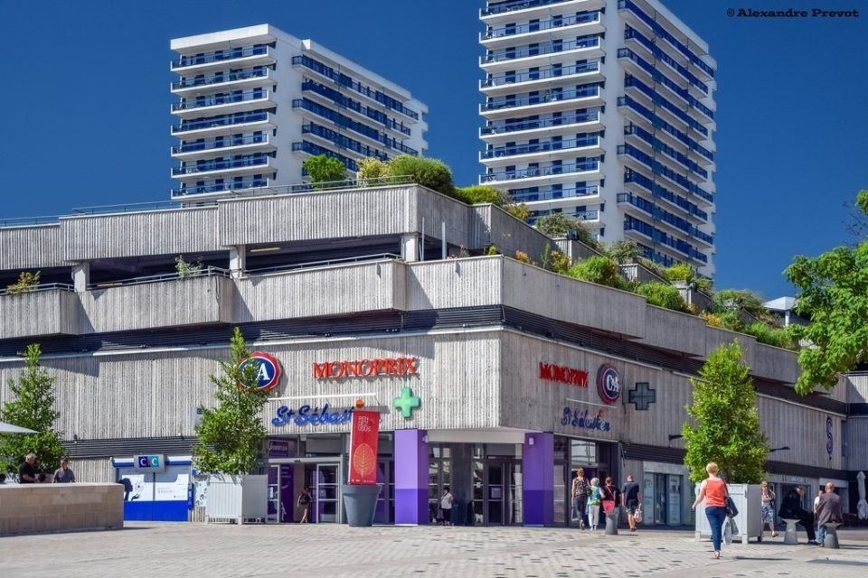
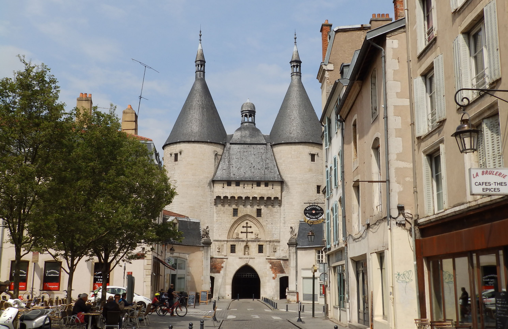

Quartiers Commerçants
Les meilleurs spots shopping de Nancy

Premium
Centre-Ville Piétonnier
Le cœur commerçant de Nancy avec ses rues piétonnes élégantes. Grandes enseignes, boutiques de mode, librairies et concept stores.
Points d'intérêt :
- Rue Saint-Jean (grandes enseignes)
- Rue des Dominicains (mode)
- Rue Stanislas (luxe)
- Place Saint-Epvre (terrasses)

Tendance
Quartier Saint-Sébastien
Le quartier branché et artistique de Nancy. Boutiques vintage, friperies, galeries d'art, concept stores et ateliers de créateurs.
À découvrir :
- Friperies et boutiques vintage
- Galeries d'art contemporain
- Ateliers de créateurs
- Boutiques de déco

Authentique
Grande Rue - Vieille Ville
La rue historique de Nancy avec ses façades médiévales. Antiquaires, librairies anciennes, boutiques d'artisanat et épiceries fines.
Spécialités :
- Antiquaires et brocanteurs
- Librairies spécialisées
- Maisons de thé
- Chocolatiers artisanaux